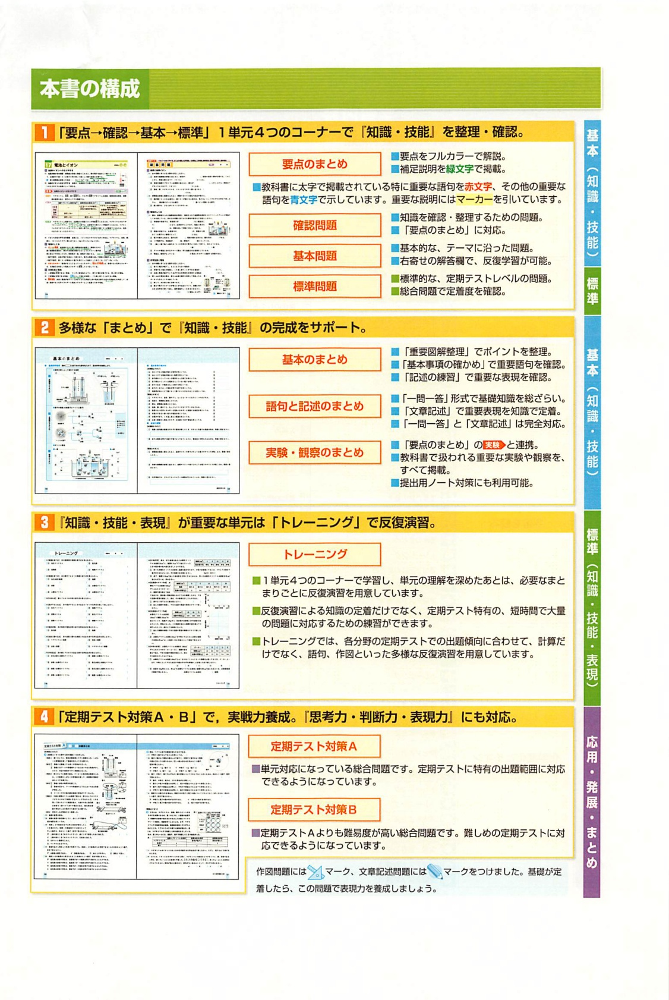

全434ページ

解答冊子の印刷ページに基づきます。本アプリのPDFでは1・2年の復習にあたる先頭8ページを省略しており、印刷p.9がPDF先頭（全体p.234）です。ジャンプは「印刷p − 8＝PDF内ページ → 全体 233＋PDF内ページ」で計算します。
副教材も同じ単元見出しでジャンプ先を割り当てています（目安）。
プラス解答はページ数が少ないため、単元の先頭付近へのジャンプ（目安）です。